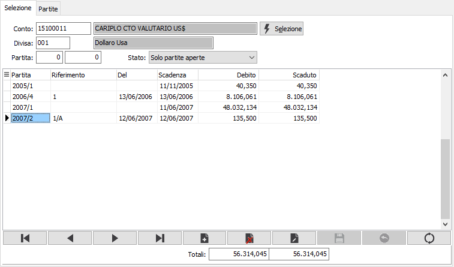
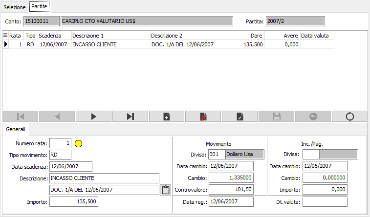

Manutenzione movimenti
Il programma consente di effettuare variazioni alle partite dei sottoconti.
Poiché le scadenze sono strettamente connesse alla contabilità, è possibile modificare solo elementi che non hanno rilevanza contabile: date di scadenza, modalità di pagamento, importi delle singole rate purché il loro totale corrisponda al totale del documento presente in contabilità, accorpamento totale o parziale di più movimenti sotto una sola partita. Se si dovesse invece modificare anche l’importo complessivo del documento (partita), si dovrà provvedere in variazione tramite il programma di Gestione Prima Nota.
Accedendo al programma, appare la seguente finestra video di selezione partite, che consente, una volta inseriti i parametri di selezione (codice conto; divisa; stato delle partite da esaminare) di visualizzare le partite congruenti con i parametri forniti.
Una volta visualizzate le partite (il cui importo, appunto, non può essere modificato se non tramite il programma di Gestione prima nota perché collegato all’importo presente in contabilità, è possibile selezionarle singolarmente per visualizzare le relative scadenze che, invece, possono essere modificate a condizione che la somma delle scadenze modificate di una singola partita corrisponda all’importo totale della partita stessa visualizzata nella finestra video di selezione.
Finestra video Selezione partite

CONTO: codice del sottoconto, presente nella rispettiva Anagrafica, di cui si intende visualizzare le partite. Sul campo è attiva la funzione di ricerca F9.
CODICE DIVISA: codice della divisa, presente in Tabella Divise, di cui si intende visualizzare le partite. Viene proposta automaticamente la divisa memorizzata sull' anagrafica del sottoconto, modificabile dall’utente nel caso in cui il sottoconto abbia movimentazioni in più divise. Sul campo è attiva la funzione di ricerca F9.
PARTITA: due campi per indicare l’anno e il numero della partita che si vuole selezionare, supposto che l’utente conosca tali informazioni. Confermando a vuoto, verranno comunque visualizzate tutte le partite coerenti con i parametri inseriti.
STATO: combo box per selezionare lo stato delle partite da visualizzare. Valori ammessi: Solo partite aperte; Anche le partite chiuse.
Inseriti i parametri, occorre confermarli tramite pressione del bottone Seleziona: vengono quindi visualizzate le partite coerenti con i parametri inseriti.
È quindi possibile operare per:
accorpare due o più partite
scorporare partite precedentemente accorpate
manutenere le scadenze di una partita
inserire una nuova partita: svincolata dalla registrazione contabile e solo nel caso di quadratura non obbligatoria fra partite e scadenze.
duplicare la scadenza
Manutenzione delle scadenze di una partita
Dopo aver selezionato tramite i tasti freccia giù o freccia su la partita da manutenere, che deve risultare evidenziata nella griglia delle partite, cliccando due volte sul rigo di tale partita o premere il tasto F11, si apre la finestra video delle scadenze, che visualizza tutti i dettagli di scadenza di tale partita. La finestra video scadenze si articola su tre sezioni: nella sezione superiore compaiono gli estremi del sottoconto e il numero di partita; nella sezione centrale è visualizzata la griglia dei dettagli (rate) in cui è suddivisa la partita stessa e nella sezione inferiore è disponibile il pannello di input.
All’ingresso nella finestra video, nella griglia risulta selezionato il primo dettaglio scadenza della partita e contemporaneamente il cursore è posizionato sul campo Numero rata del pannello di input, che visualizza analiticamente le informazioni contenute nel primo dettaglio scadenze suddivise in tre sezioni orizzontali: i dati generici con l'importo in divisa, i dati in controvalore del movimento ed i dati dell'eventuale incasso o pagamento effettuato in divisa diversa (solo su movimenti di incasso/pagamento).
Tramite i tasti freccia giù e freccia su è possibile scorrere i vari righi di dettaglio scadenze, e contestualmente all’evidenziazione del rigo attivo nella griglia, i suoi dati vengono riportati nel pannello di input.

Possono essere modificati le righe di ciascuna rata, a condizione che non esistano altre righe di dettaglio scadenza per la stessa rata: ovviamente non avrebbe senso modificare la condizione di pagamento o l’importo di una rata se la rata stessa fosse già stata pagata.